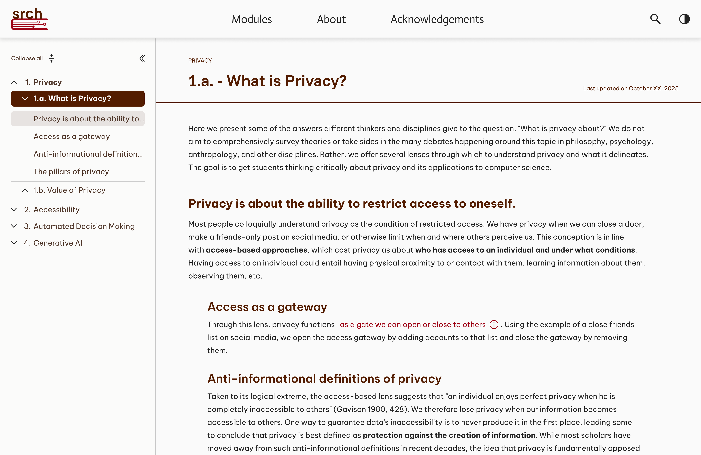
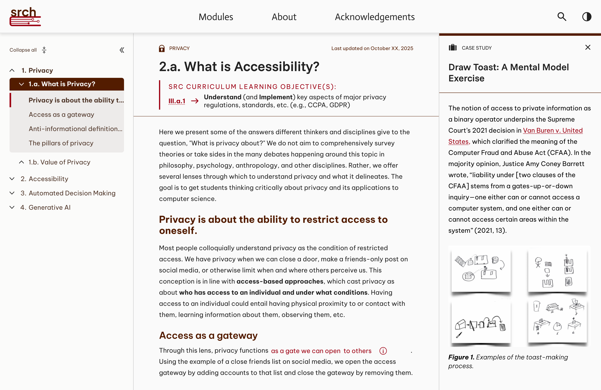
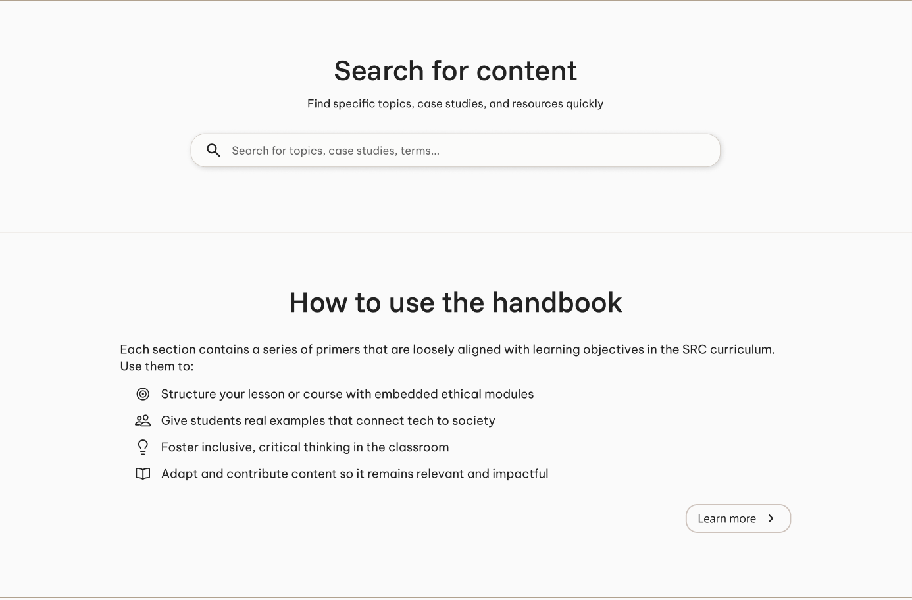
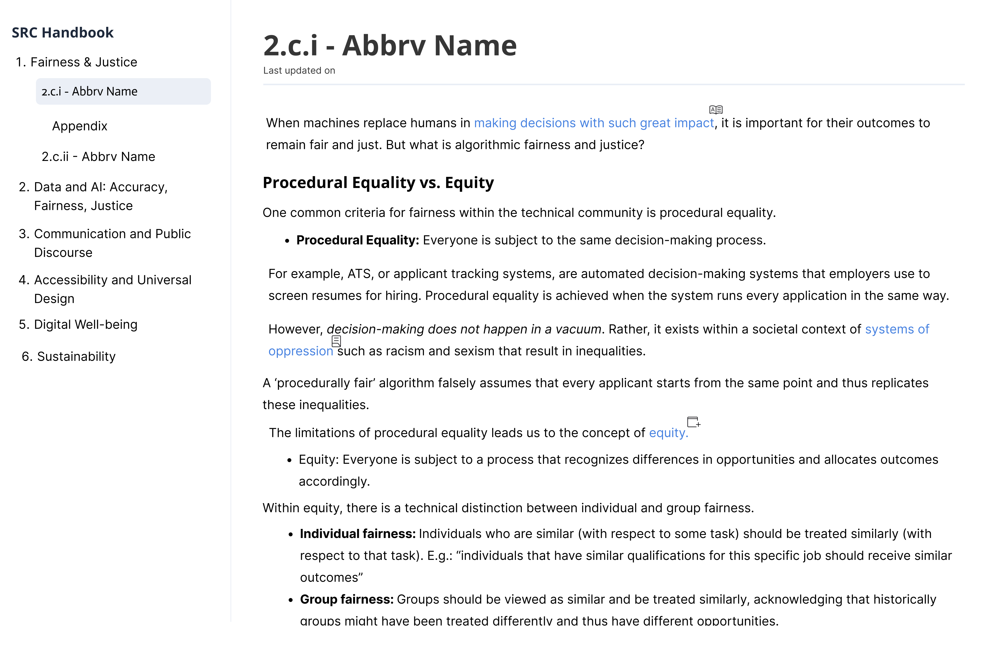
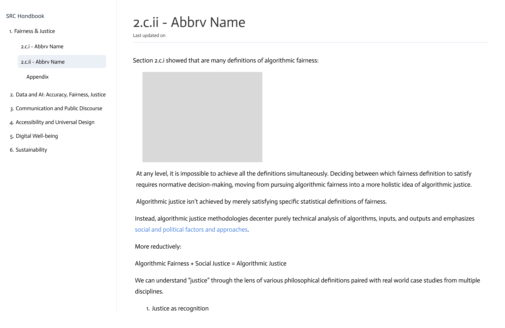
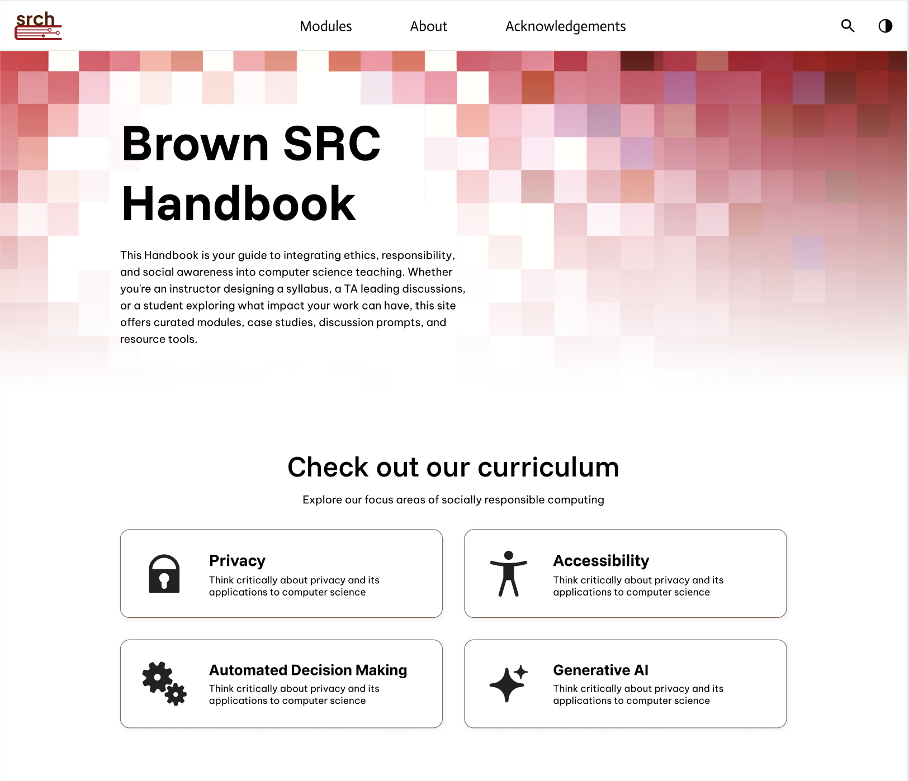
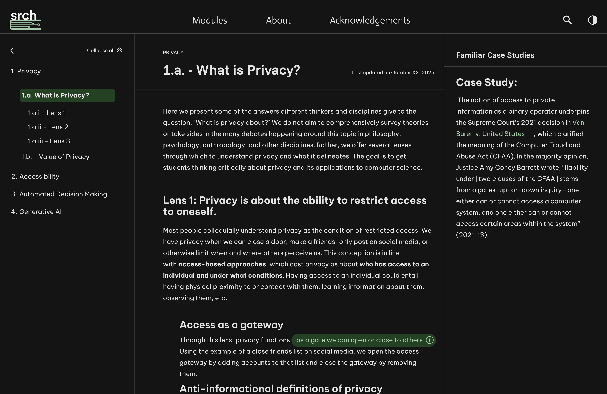
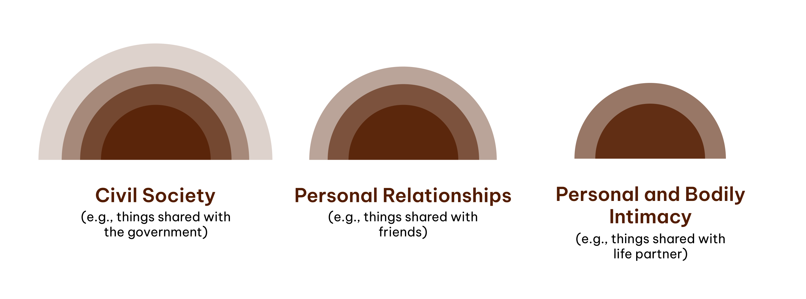
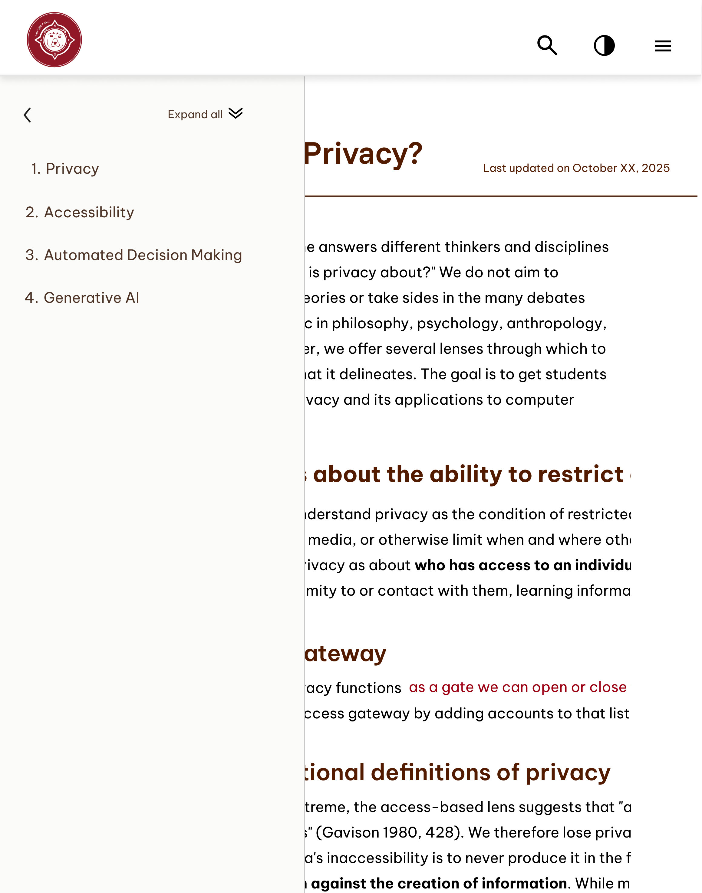
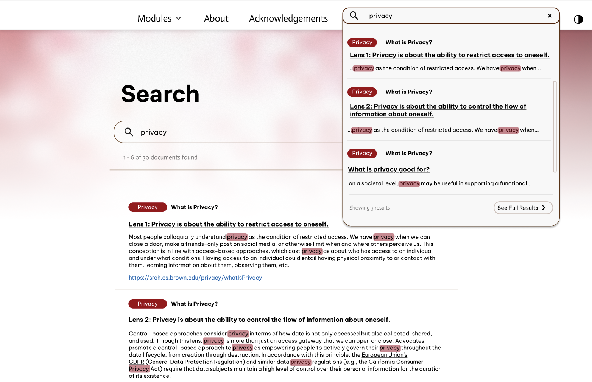

ANUSHKA PARIKHgraphic designer
Pursuing a BFA in Graphic Design and a Concentration in
Computation at the Rhode Island School of Design. Her work
largely revolves around interaction, accessible design,
research, & brand identities.
Computation at the Rhode Island School of Design. Her work
largely revolves around interaction, accessible design,
research, & brand identities.
SOCIALLY RESPONSIBLE COMPUTING (SRC) HANDBOOK FOR BROWN UNIVERSITY
brand identity + ui/ux
In → Fall 2025
With → Jasmine Kamara, Huda Abdulrasool, and Alex Hogue
With → Jasmine Kamara, Huda Abdulrasool, and Alex Hogue
As part of the product design team, we were tasked to create a website that organized primers on accessibility, AI, ethics, and more. This project involved the redesigning of the logo to represent the Computer Science and Data Science departments and accessible website design.
Website↗
OVERVIEW
Socially Responsible Computing Handbook
This Handbook is your guide to integrating ethics, responsibility,
and social awareness into computer science teaching. Whether you're an
instructor designing a syllabus, a TA leading discussions, or a student
exploring what impact your work can have, this site offers curated modules,
case studies, discussion prompts, and resource tools.
MY ROLE
UI/UX and Brand Designer
My role included designing the entire website, including primer pages
and the main website landing page. Additionally, I was tasked with
creating the entire visual identity system including, typography, logo,
icons, and color palette.
PROJECT OVERVIEWS
A text-dense handbook
The handbook's main components were primers split by accessibility, AI,
ethics, and more. These primers included long execerpts of references,
teaching, visual graphs, case studies, and divided into a folder system.
THE OUTCOME
Primer pages
Hierarchy was the key to resolve staring at blocks of consistent text.
We created a productive system of organization that allowed for titles
to be easily spotable.


THE OUTCOME
Sidebar expansion
The primers were very well researched and written by the SRCH team, thus
there were many references to case studies, external links, and internal links.
To have this variation meant there needed to be a visual reflection of these
interactions. We achieved this through icons and the icorporation of sidebars
to display additional information that the text references.
THE OUTCOME
Navigation
One of the biggest confusions with early iterations of the website was
the navigation of the primers. We eventually resolved this by placing
a search bar to find specific topics within the primers as well as a
quick introduction to navigating through the pages.


PROBLEM CONTEXT
Landing confusions
The original website jumped right into the primers and the
dense blocks of texts without considering the user's prior
knowledge to this website. It was imperative that we fix
this challenge for users to understand what SRCH could be
used for.
PROBLEM CONTEXT
Link accessibility
The original website had multiple distinct and complex
icons that represented how the links would appear when clicked on
which unfortunately backfired and created an ambiguity of
navigation.


PROBLEM CONTEXT
Lack of hierarchy
Previously, the text had very few differentiations in size between
title and body text. There would also be heading of small sizes with
bold and underlines with black text which could be confusing as underlined
text is typically associated with links as well as the size reducing the prominence
of the text.
WHAT CHANGED?
Integration of a distinct landing page
The landing page provides a clear call to action and proper
background on the website's primers. Additionally, the landing
page introduces the top navigation bar which gives the user an agency
to explore the primers or to learn more about SRCH itself.


WHAT CHANGED?
Night mode + consistent hierarchy
These features allow for a more accessible experience
as it provides visual variation that the user has the agency
to toggle between and topic titles bolded to easily identify
changes between topics and subtopics.
WHAT CHANGED?
Models that follow our visual system
Previously, models were taken from external sources or created
unrelated to the SRCH. So I was tasked with matching the models
to our visual identity, not only to visually appeal more to the user,
but also to easily digest the information and provide visual breaks
between the text.


ITERATION
Responsive design
Another challenge that we came across is creating a
responsive design such splitscreen visual of how
the website would adapt. Due to the information dense
nature of the website, it was important to maintain
the information accessibly, while also being aware
of the reduced navigation available during splitscreen.
ITERATION
Search bar navigation
The search bar placements creates confusion of the distinction
between the search bar located in the navigation and the search bar
appearing on the home page. Thus, the navigation bar would adjust
to the appropriate search bar and the primer pages would only reveal
one search bar to avoid confusion.

TAKEAWAY
Product in education
Through this project, I became fascinated with the hidden
challenges behind making a design "simple/accessible." Many
designers I know find accessibility to result in something that
is "boring", however, I find it exciting to bring creativity
into the world of accessibility.
TAKEAWAY
User testing !
This project gave me access to conduct user interviews
with students who used assistive technologies and get
firsthand feedback from users who will actually interact
with the website in the future. It was interesting to see
how different assistive technologies provided new challenges
and how my decisions were directly impacting the user.
© Anushka Parikh 2026 [aparik01@risd.edu]